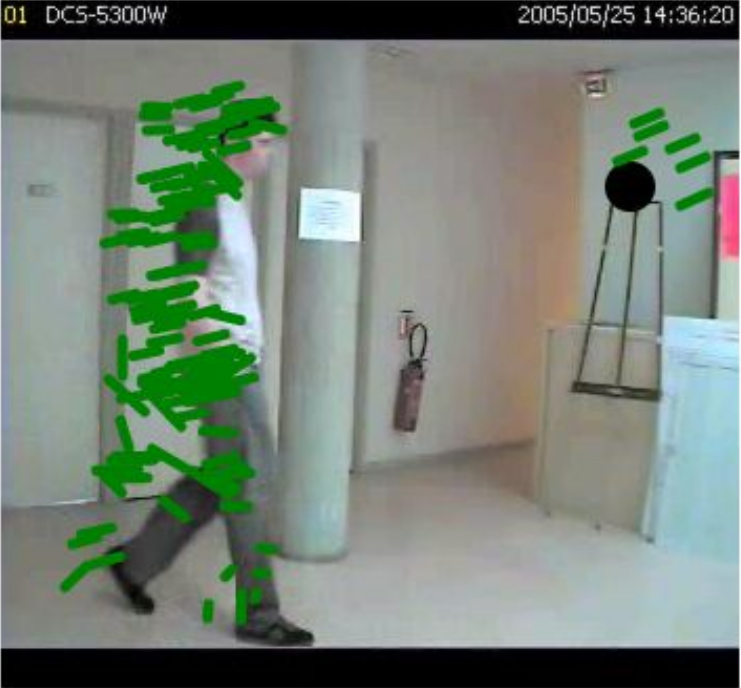
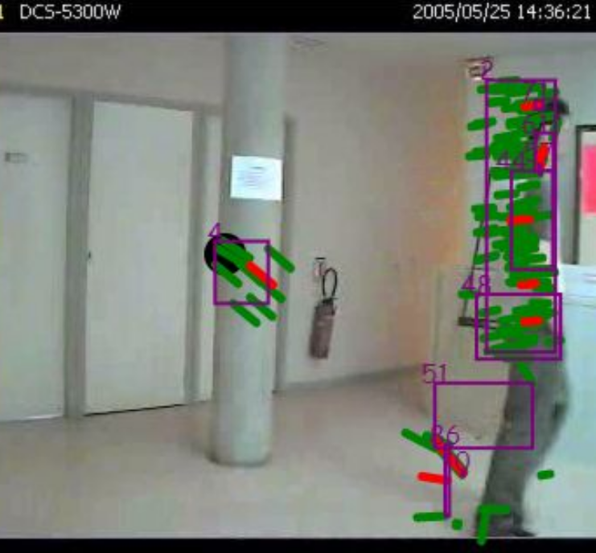
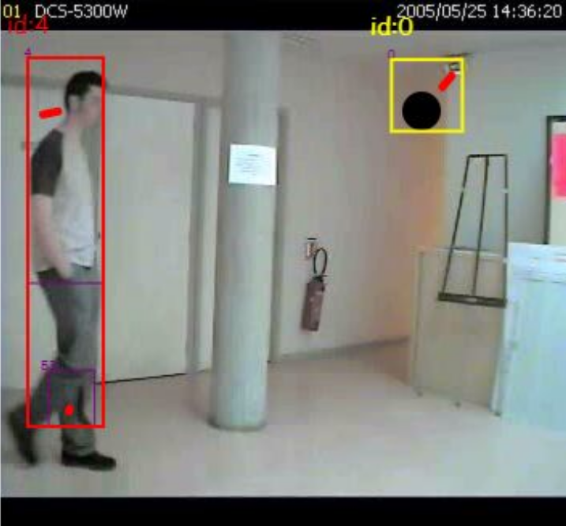
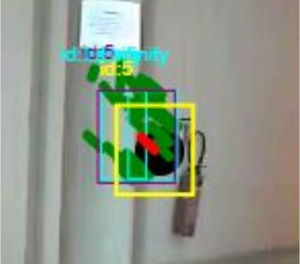

Suivi de points avec Lukas-Kanade


Leur produit scalaire est supérieur à 0.8 (Critère de colinéarité)
La distance de leur origine est inférieur à 80px (Même zone)
La différence de leur vitesse est inférieur à 2px/image (Même vitesse)
next